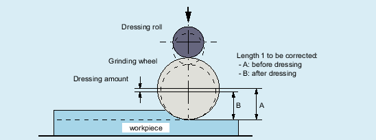

The FTOC function enables the overlaid movement of a geometry axis for the online tool offset, depending on a reference value, e.g. the actual value of an arbitrary axis. The offset value is calculated on the basis of a polynomial defined with FCTDEF (see Section "Polynomial coefficients, parameters ($AC_FCT ...)"). The coefficient a0 specified in the polynomial definition is also evaluated by FTOC.
Example: Machining and dressing in the "Grinding" technology
Dressing during machining using a dressing roll
More information
Function Manual for tools
FTOC(<Poly_No>,<systemvar>,<wear>[,<channel_No>,<spindle_No>])
Parameter | Meaning |
|---|---|
| Number of the polynomial defined with |
| Arbitrary system variable of the REAL type that can be used in synchronous actions. |
| Wear parameter (length 1, 2 or 3) in which the offset value is added. |
| Target channel in which the offset must be applied. This enables simultaneous dressing from a parallel channel. In the target channel of the offset, the online offset must be switched on with If no channel number is programmed, the offset acts in the active channel. |
| The spindle number is programmed if a non-active grinding wheel needs to be dressed. Requirement: One of the following functions is active
If no spindle number is programmed, the active tool is compensated. |
Compensate length of an active grinding wheel
| Program code | Comment |
|---|---|
| FCTDEF(1, -1000, 1000, -$AA_IW[V], 1) | |
| ; FTOC:; Polynomial no.: 1; System variable: $AA_IW[V] (axial actual value of the V axis); Wear parameter: Length 3; Target channel: Channel 1 | |
| ID=1 DO FTOC(1, $AA_IW[V], 3, 1) | |
| WAITM (1,1,2) | ; Synchronization with the machining channel |
| G1 V-0.05 F0.01 G91 | ; Traversing motion of the V axis |
| ... | |
| CANCEL(1) | ; Deselect online offset |
| ... | |
| Note |
Because no frequency and no condition has been specified in the synchronous action, the action part is executed in every interpolator clock cycle. |